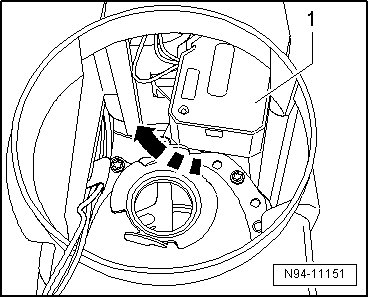
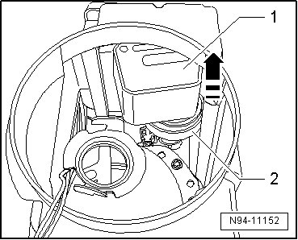
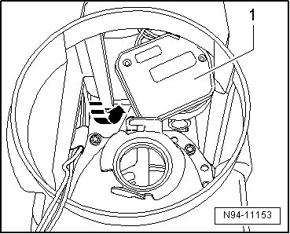
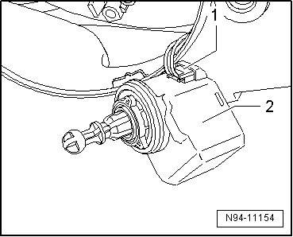
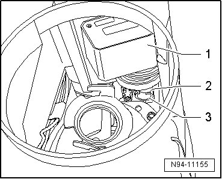
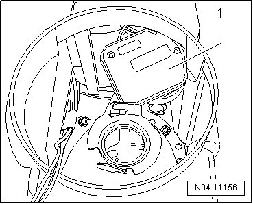
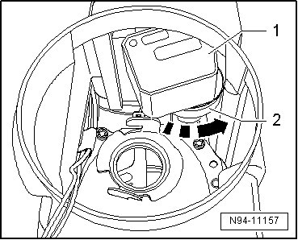

Headlamp Range Control Positioning Motor
Halogen Headlamps, from 12.06
Headlamp Range Control Positioning Motor
• If adjustment motors are removed and installed or replaced, headlamp adjustment must be checked and headlamp must be adjusted if necessary .
• The illustrations show the procedure for removing and installing the right headlamp beam adjusting motor.
• The same procedure is used to remove and install left headlamp beam adjustment motor (V48) and right headlamp beam adjustment motor (V49).
Removing
- Switch off ignition, switch off all electrical consumers and remove ignition key.
- Remove headlamp --> [ Headlamps ]. Headlamps
- Remove the low beam headlamp --> [ Low Beam Bulb ]. Low Beam Bulb
- Rotate the headlamp beam adjustment motor - 1 - in the - direction of the arrow - as far as the stop to release it.

- Raise the headlamp beam adjustment motor - 1 - in the - direction of the arrow - approximately 1 cm up from its retainer - 2 -.

• A rubber ring holds the adjustment motor relatively tightly in its retainer.
• Lifting the reflector makes it easier to lift the adjustment motor out of its retainer.
• it is not possible to tilt the ball head out as described below without lifting the adjustment motor out of its retainer.
• Make sure the adjustment motor is in its locked position when lifting it.
- Tip the headlamp beam adjustment motor- 1 - in the - direction of the arrow - to pivot the adjustment motor ball head back out of the ball head mount.

- Remove the headlamp beam adjustment motor- 1 - out of the headlamp housing. Be careful of the connected wires.
- Disconnect connector - 1 - and remove Headlamp Beam Adjusting Motor - 2 -.

Installing
Install in reverse order of removal, noting the following:
CAUTION!
When installing cap, ensure proper seating. It is destroyed by ingress of water into headlamp.
- Connect the connector on the headlamp beam adjustment motor.
- First position the headlamp beam adjustment motor- 1 - with the ball head - 2 - on the ball head mount - 3 -.

- Tip the headlamp beam adjustment motor- 1 - as illustrated and pivot the ball head into the ball head mount from behind.

• Lifting the reflector at the same time makes it easier to pivot the ball head into the ball head mount.
- Position the headlamp beam adjustment motor- 1 - in the locked position on the retainer - 2 - and turn it in the - direction of the arrow - to lock it.

- Check headlamp for function.
- Check and adjust headlamp aim if necessary .